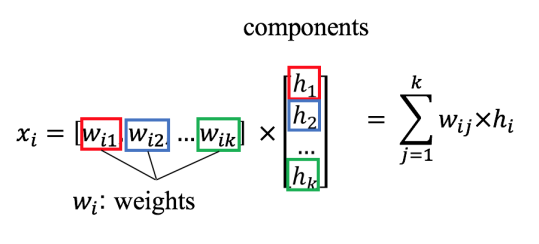
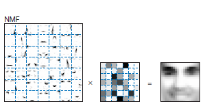

Decomposition Algorithms#
Reduce the number of dimensions in a dataset while still explaining as much of the information as possible
Import functions#
%matplotlib inline
import pandas as pd
import numpy as np
import matplotlib.pyplot as plt
import seaborn as sns; sns.set()
from time import time
import logging
from sklearn.model_selection import train_test_split
from sklearn.model_selection import GridSearchCV
from sklearn.datasets import fetch_lfw_people
from sklearn.metrics import classification_report
from sklearn.metrics import confusion_matrix
from sklearn.decomposition import PCA, FastICA, NMF
from sklearn.neighbors import KNeighborsClassifier
from sklearn.svm import SVC
from scipy import signal
# Enable plots inside the Jupyter NotebookLet the
%matplotlib inline
from keras.datasets import mnist
from scipy import signal
import plotly_express as px
WARNING:tensorflow:From C:\ProgramData\Miniconda3\envs\mem680\lib\site-packages\keras\src\losses.py:2976: The name tf.losses.sparse_softmax_cross_entropy is deprecated. Please use tf.compat.v1.losses.sparse_softmax_cross_entropy instead.
Principal Component Analysis (PCA)#
One of the most broadly used unsupervised learning algorithms
PCA belongs to a class of dimensionality reduction algorithm
PCA can be used for:
the visualization of high-dimensional data
noise filtering
feature extraction and engineering
PCA is a very fast and flexible method to reduce the dimensionality of data.
This concept is easy to visualize in 2d
Generating Data#
# sets the random state
rng = np.random.RandomState(1)
# makes 200 random points
X = np.dot(rng.rand(2, 2), rng.randn(2, 200)).T
# plots the graph
plt.scatter(X[:, 0], X[:, 1])
plt.axis('equal');
This looks like a linear regression problem, however, if we did not know this linear trend, we can instead try and learn about the relationship between the x and y values
In PCA you try and find the principal axis (the axis with the largest variance) of the dataset and use that axis to describe the data
Implementing PCA in Scikit-learn#
pca = PCA(n_components=2)
pca.fit(X)
PCA(n_components=2)In a Jupyter environment, please rerun this cell to show the HTML representation or trust the notebook.
On GitHub, the HTML representation is unable to render, please try loading this page with nbviewer.org.
PCA(n_components=2)
What PCA learns?#
Components or Eigenvectors
These represent the directions of the largest variance
print(pca.components_)
[[-0.94446029 -0.32862557]
[-0.32862557 0.94446029]]
Variance Explained
This represents the amount of variance in the dataset explained by the principal component
print(pca.explained_variance_)
[0.7625315 0.0184779]
Visualizing what PCA is doing#
Finds the direction of highest variance and draws a vector in that direction (eigenvector)
Projects all of the data points onto that dimension (eigenvalues)
Finds the next direction orthogonal to the first PC that has the largest variance.
Process 2 and 3 repeats for the number of components selected
def draw_vector(v0, v1, ax=None):
ax = ax or plt.gca()
arrowprops=dict(arrowstyle='->',
linewidth=2,
shrinkA=0, shrinkB=0, color='black')
ax.annotate('', v1, v0, arrowprops=arrowprops)
# plot data
plt.scatter(X[:, 0], X[:, 1], alpha=0.2)
for length, vector in zip(pca.explained_variance_, pca.components_):
v = vector * 3 * np.sqrt(length)
draw_vector(pca.mean_, pca.mean_ + v)
plt.axis('equal');
What does this graph show?
These vectors represent the principal axes in the data
The length of the vector indicates how important that axis is in describing the distribution (the variance)
rng = np.random.RandomState(1)
X = np.dot(rng.rand(2, 2), rng.randn(2, 200)).T
pca = PCA(n_components=2, whiten=True)
pca.fit(X)
fig, ax = plt.subplots(1, 2, figsize=(16, 6))
fig.subplots_adjust(left=0.0625, right=0.95, wspace=0.1)
# plot data
ax[0].scatter(X[:, 0], X[:, 1], alpha=0.2)
for length, vector in zip(pca.explained_variance_, pca.components_):
v = vector * 3 * np.sqrt(length)
draw_vector(pca.mean_, pca.mean_ + v, ax=ax[0])
ax[0].axis('equal');
ax[0].set(xlabel='x', ylabel='y', title='input')
# plot principal components
X_pca = pca.transform(X)
ax[1].scatter(X_pca[:, 0], X_pca[:, 1], alpha=0.2)
draw_vector([0, 0], [0, 3], ax=ax[1])
draw_vector([0, 0], [3, 0], ax=ax[1])
ax[1].axis('equal')
ax[1].set(xlabel='component 1', ylabel='component 2',
title='principal components',
xlim=(-5, 5), ylim=(-3, 3.1))
[Text(0.5, 0, 'component 1'),
Text(0, 0.5, 'component 2'),
Text(0.5, 1.0, 'principal components'),
(-5.0, 5.0),
(-3.0, 3.1)]
At first, this might appear to be something of mathematical interest but it has far-reaching implications.
You are saying that you can break down data into a set of orthogonal directions and values and describe the data well.
You choose the directions of maximum variance thus the higher components contain less information
Use Cases for PCA#
Dimensionality Reduction#
You can take data that exists in a high-dimensional space and approximate it in a lower-dimensional space
Example: taking 2d data and converting it into 1d
pca = PCA(n_components=1)
pca.fit(X)
X_pca = pca.transform(X)
print("original shape: ", X.shape)
print("transformed shape:", X_pca.shape)
original shape: (200, 2)
transformed shape: (200, 1)
X_new = pca.inverse_transform(X_pca)
plt.scatter(X[:, 0], X[:, 1], alpha=0.2)
plt.scatter(X_new[:, 0], X_new[:, 1], alpha=0.8)
plt.axis('equal');
Blue points represent the raw data, orange points represent the projected dimension
When you conduct PCA some information is lost, however, most of the information is retained.
The question you have to ask is the representation is “good enough”
If you have noisy data PCA can help remove uncorrelated variance
In this case, most of the information is retained while the dimensionality of the data was reduced by half
Real Example of PCA#
# Display progress logs on stdout
logging.basicConfig(level=logging.INFO, format='%(asctime)s %(message)s')
# #############################################################################
# Download the data, if not already on disk and load it as numpy arrays
lfw_people = fetch_lfw_people(min_faces_per_person=70, resize=0.4)
# introspect the images arrays to find the shapes (for plotting)
n_samples, h, w = lfw_people.images.shape
# for machine learning we use the 2 data directly (as relative pixel
# positions info is ignored by this model)
X = lfw_people.data
n_features = X.shape[1]
# the label to predict is the id of the person
y = lfw_people.target
target_names = lfw_people.target_names
n_classes = target_names.shape[0]
print("Total dataset size:")
print("n_samples: %d" % n_samples)
print("n_features: %d" % n_features)
print("n_classes: %d" % n_classes)
Total dataset size:
n_samples: 1288
n_features: 1850
n_classes: 7
Split into a training set and a test set using a stratified k-fold
# split into a training and testing set
X_train, X_test, y_train, y_test = train_test_split(
X, y, test_size=0.25, random_state=42)
Training a classifier without PCA
# Train a SVM classification model
clf = SVC(kernel='linear')
clf = clf.fit(X_train, y_train)
Evaluation of Model Quality
print("Predicting people's names on the test set")
t0 = time()
y_pred = clf.predict(X_test)
print("done in %0.3fs" % (time() - t0))
print(classification_report(y_test, y_pred, target_names=target_names))
cm = confusion_matrix(y_test, y_pred, labels=range(n_classes))
plt.clf()
plt.imshow(cm, interpolation='nearest', cmap=plt.cm.viridis)
plt.title('Class_Names')
plt.ylabel('True label')
plt.xlabel('Predicted label')
tick_marks = np.arange(len(target_names))
plt.xticks(tick_marks, target_names, rotation=45)
plt.yticks(tick_marks, target_names)
plt.show()
Predicting people's names on the test set
done in 0.076s
precision recall f1-score support
Ariel Sharon 0.69 0.85 0.76 13
Colin Powell 0.85 0.87 0.86 60
Donald Rumsfeld 0.57 0.63 0.60 27
George W Bush 0.89 0.91 0.90 146
Gerhard Schroeder 0.69 0.72 0.71 25
Hugo Chavez 0.70 0.47 0.56 15
Tony Blair 0.80 0.67 0.73 36
accuracy 0.81 322
macro avg 0.74 0.73 0.73 322
weighted avg 0.81 0.81 0.81 322
Compute PCA
# Compute a PCA (eigenfaces) on the face dataset (treated as unlabeled
# dataset): unsupervised feature extraction / dimensionality reduction
n_components = 150
print("Extracting the top %d eigenfaces from %d faces"
% (n_components, X_train.shape[0]))
t0 = time()
pca = PCA(n_components=n_components, svd_solver='randomized',
whiten=True).fit(X_train)
print("done in %0.3fs" % (time() - t0))
eigenfaces = pca.components_.reshape((n_components, h, w))
print("Projecting the input data on the eigenfaces orthonormal basis")
t0 = time()
X_train_pca = pca.transform(X_train)
X_test_pca = pca.transform(X_test)
print("done in %0.3fs" % (time() - t0))
Extracting the top 150 eigenfaces from 966 faces
done in 0.409s
Projecting the input data on the eigenfaces orthonormal basis
done in 0.007s
Train and SVM on the PCA data
# Train a SVM classification model
# This will take about 7 minutes
print("Fitting the classifier to the training set")
t0 = time()
param_grid = {'C': [1e3, 5e3, 1e4, 5e4, 1e5],
'gamma': [0.0001, 0.0005, 0.001, 0.005, 0.01, 0.1], }
clf = GridSearchCV(SVC(kernel='rbf', class_weight='balanced'),
param_grid, cv=5)
clf = clf.fit(X_train_pca, y_train)
print("done in %0.3fs" % (time() - t0))
print("Best estimator found by grid search:")
print(clf.best_estimator_)
Fitting the classifier to the training set
done in 8.150s
Best estimator found by grid search:
SVC(C=1000.0, class_weight='balanced', gamma=0.005)
Evaluation of Model Quality
print("Predicting people's names on the test set")
t0 = time()
y_pred = clf.predict(X_test_pca)
print("done in %0.3fs" % (time() - t0))
print(classification_report(y_test, y_pred, target_names=target_names))
cm = confusion_matrix(y_test, y_pred, labels=range(n_classes))
plt.clf()
plt.imshow(cm, interpolation='nearest', cmap=plt.cm.viridis)
plt.title('Class_Names')
plt.ylabel('True label')
plt.xlabel('Predicted label')
tick_marks = np.arange(len(target_names))
plt.xticks(tick_marks, target_names, rotation=45)
plt.yticks(tick_marks, target_names)
plt.show()
Predicting people's names on the test set
done in 0.026s
precision recall f1-score support
Ariel Sharon 0.90 0.69 0.78 13
Colin Powell 0.87 0.77 0.81 60
Donald Rumsfeld 0.64 0.52 0.57 27
George W Bush 0.77 0.98 0.86 146
Gerhard Schroeder 0.75 0.60 0.67 25
Hugo Chavez 1.00 0.27 0.42 15
Tony Blair 0.79 0.61 0.69 36
accuracy 0.79 322
macro avg 0.82 0.63 0.69 322
weighted avg 0.79 0.79 0.77 322
PCA of Faces
def plot_gallery(images, titles, h, w, n_row=3, n_col=4):
"""Helper function to plot a gallery of portraits"""
plt.figure(figsize=(1.8 * n_col, 2.4 * n_row))
plt.subplots_adjust(bottom=0, left=.01, right=.99, top=.90, hspace=.35)
for i in range(n_row * n_col):
plt.subplot(n_row, n_col, i + 1)
plt.imshow(images[i].reshape((h, w)), cmap=plt.cm.gray)
plt.title(titles[i], size=12)
plt.xticks(())
plt.yticks(())
# plot the result of the prediction on a portion of the test set
def title(y_pred, y_test, target_names, i):
pred_name = target_names[y_pred[i]].rsplit(' ', 1)[-1]
true_name = target_names[y_test[i]].rsplit(' ', 1)[-1]
return 'predicted: %s\ntrue: %s' % (pred_name, true_name)
prediction_titles = [title(y_pred, y_test, target_names, i)
for i in range(y_pred.shape[0])]
plot_gallery(X_test, prediction_titles, h, w)
# plot the gallery of the most significative eigenfaces
eigenface_titles = ["eigenface %d" % i for i in range(eigenfaces.shape[0])]
plot_gallery(eigenfaces, eigenface_titles, h, w)
plt.show()
PCA can help reduce the curse of dimensionality. It is one way to help prevent overfitting.
Independent Component Analysis#
Tries to split signals into their fundamental components
You can think of this as the cocktail party problem. Imagine you are in a room with a bunch of people talking. How can you hear one person excluding the noise
Visual comparison between PCA and ICA
# Authors: Alexandre Gramfort, Gael Varoquaux
# License: BSD 3 clause
# #############################################################################
# Generate sample data
rng = np.random.RandomState(42)
S = rng.standard_t(1.5, size=(20000, 2))
S[:, 0] *= 2.
# Mix data
A = np.array([[1, 1], [0, 2]]) # Mixing matrix
X = np.dot(S, A.T) # Generate observations
pca = PCA()
S_pca_ = pca.fit(X).transform(X)
ica = FastICA(random_state=rng)
S_ica_ = ica.fit(X).transform(X) # Estimate the sources
S_ica_ /= S_ica_.std(axis=0)
# #############################################################################
# Plot results
def plot_samples(S, axis_list=None):
plt.scatter(S[:, 0], S[:, 1], s=2, marker='o', zorder=10,
color='steelblue', alpha=0.5)
if axis_list is not None:
colors = ['orange', 'red']
for color, axis in zip(colors, axis_list):
axis /= axis.std()
x_axis, y_axis = axis
# Trick to get legend to work
plt.plot(0.1 * x_axis, 0.1 * y_axis, linewidth=2, color=color)
plt.quiver(0, 0, x_axis[0], y_axis[0], zorder=11, width=0.01, scale=6,
color=color)
plt.quiver(0, 0, x_axis[1], y_axis[1], zorder=11, width=0.01, scale=6,
color=color)
plt.hlines(0, -3, 3)
plt.vlines(0, -3, 3)
plt.xlim(-3, 3)
plt.ylim(-3, 3)
plt.xlabel('x')
plt.ylabel('y')
plt.figure(figsize=(10,10))
plt.subplot(2, 2, 1)
plot_samples(S / S.std())
plt.title('True Independent Sources')
axis_list = [pca.components_.T, ica.mixing_]
plt.subplot(2, 2, 2)
plot_samples(X / np.std(X), axis_list=axis_list)
legend = plt.legend(['PCA', 'ICA'], loc='upper right')
legend.set_zorder(100)
plt.title('Observations')
plt.subplot(2, 2, 3)
plot_samples(S_pca_ / np.std(S_pca_, axis=0))
plt.title('PCA recovered signals')
plt.subplot(2, 2, 4)
plot_samples(S_ica_ / np.std(S_ica_))
plt.title('ICA recovered signals')
plt.subplots_adjust(0.09, 0.04, 0.94, 0.94, 0.26, 0.36)
ICA looks for directions in the data space that are highly non-Gaussian
ICA for Spectral Unmixing#
A more practical example solving the cocktail party problem
Independent component analysis allows you to do blind source separation. If you have multiple signals and multiple detectors ICA can identify the independent signals.
We will start by creating some independent signals that will be mixed by matrix A. The independent sources signals are (1) a sine wave, (2) a saw tooth signal and (3) a random noise vector. After calculating their dot product with A we get three linear combinations of these source signals.
np.random.seed(0)
n_samples = 2000
time = np.linspace(0, 8, n_samples)
s1 = np.sin(2 * time) # Signal 1 : sinusoidal signal
s2 = np.sign(np.sin(3 * time)) # Signal 2 : square signal
s3 = signal.sawtooth(2 * np.pi * time) # Signal 3: saw tooth signal
S = np.c_[s1, s2, s3]
S += 0.2 * np.random.normal(size=S.shape) # Add noise
S /= S.std(axis=0) # Standardize data
# Mix data
A = np.array([[1, 1, 1], [0.5, 2, 1.0], [1.5, 1.0, 2.0]]) # Mixing matrix
X = np.dot(S, A.T) # Generate observations
# Compute ICA
ica = FastICA(n_components=3)
S_ = ica.fit_transform(X) # Reconstruct signals
A_ = ica.mixing_ # Get estimated mixing matrix
# We can `prove` that the ICA model applies by reverting the unmixing.
assert np.allclose(X, np.dot(S_, A_.T) + ica.mean_)
# For comparison, compute PCA
pca = PCA(n_components=3)
H = pca.fit_transform(X) # Reconstruct signals based on orthogonal components
plt.figure()
models = [X, S, S_, H]
names = [
"Observations (mixed signal)",
"True Sources",
"ICA recovered signals",
"PCA recovered signals",
]
colors = ["red", "steelblue", "orange"]
for ii, (model, name) in enumerate(zip(models, names), 1):
plt.subplot(4, 1, ii)
plt.title(name)
for sig, color in zip(model.T, colors):
plt.plot(sig, color=color)
plt.tight_layout()
plt.show()

Non-Negative Matrix Factorization#
matrix factorization method where we constrain the matrices to be nonnegative
What is matrix factorization?
If we want to factor \(X\) into two matrices \(W\) and \(H\) there is no guarantee that we can recover the original matrix $\(X \approx WH\)$
suppose that \(X\) is composed of m rows \(x_1, x_2, ... x_m\) , \(W\) is composed of \(k\) rows \(w_1, w_2, ... w_k\) , \(H\) is composed of \(m\) rows \(h_1, h_2, ... h_m\) .
Each row in \(X\) can be considered a data point.
For instance, in the case of decomposing images, each row in \(X\) is a single image, and each column represents some feature.

\(x\) is the sum of weights multiplied by components
We add conditions to the weights. In the case of NMF, it is that the weights are non-negative.
When do we use NMF
Good when underlying factors can be interpreted as non-negative
Comparison to PCA
PCA is another common matrix factorization technique
Factors can have positive and negative values … Why do you think this might be bad?
Components do not make that much sense
Hard to interpret what positive and negative components mean
NMF all the values are positive
The components have interpretable meanings

Different components look like different features of a face.
Example: NMF on MNIST#
Set Parameters
train_samples = 1000
nmf_components = 49
np.random.seed(0)
Import Data#
(X_train, Y_train), (X_test, Y_test) = mnist.load_data()
inputs_train = X_train[0:train_samples].astype('float32') / 255.
inputs_train = inputs_train.reshape((len(inputs_train), np.prod(inputs_train.shape[1:])))
'''
inputs_test = X_test[0:train_samples].astype('float32') / 255.
inputs_test = inputs_test.reshape((len(inputs_test), np.prod(inputs_test.shape[1:])))
'''
"\ninputs_test = X_test[0:train_samples].astype('float32') / 255.\ninputs_test = inputs_test.reshape((len(inputs_test), np.prod(inputs_test.shape[1:])))\n"
Plots Raw Images#
fig=plt.figure(figsize=(8, 8))
rows = min(int(np.sqrt(train_samples)),10)
columns = min(int(train_samples / rows),10)
for i in range(0, columns*rows):
img = inputs_train[i].reshape((28, 28))
fig.add_subplot(rows, columns, i+1)
plt.axis('off')
plt.imshow(img)
plt.show()
Conducts NMF#
# https://scikit-learn.org/stable/modules/generated/sklearn.decomposition.NMF.html
nmf = NMF(n_components=nmf_components, random_state=0, solver='mu', init='random', max_iter=200, tol=1e-4)
W = nmf.fit_transform(inputs_train)
H = nmf.components_
# H = n_components x pixels (list of components)
fig=plt.figure(figsize=(8, 8))
rows = min(int(np.sqrt(nmf_components)),10)
columns = min(int(nmf_components / rows),10)
for i in range(0, columns*rows):
img = H[i].reshape((28, 28))
fig.add_subplot(rows, columns, i+1)
plt.axis('off')
plt.imshow(img)
plt.show()
# W = samples x n_components (component mapping for each sample)
fig=plt.figure(figsize=(8, 8))
rows = min(int(np.sqrt(train_samples)),10)
columns = min(int(train_samples / rows),10)
for i in range(0, columns*rows):
img = W[i].reshape((int(np.sqrt(nmf_components)), int(np.sqrt(nmf_components))))
fig.add_subplot(rows, columns, i+1)
plt.axis('off')
plt.imshow(img)
plt.show()
C:\ProgramData\Miniconda3\envs\mem680\lib\site-packages\sklearn\decomposition\_nmf.py:1710: ConvergenceWarning: Maximum number of iterations 200 reached. Increase it to improve convergence.
warnings.warn(
Reconstruction#
output = nmf.inverse_transform(W)
fig=plt.figure(figsize=(8, 8))
rows = min(int(np.sqrt(train_samples)),10)
columns = min(int(train_samples / rows),10)
for i in range(0, columns*rows):
img = inputs_train[i].reshape((28, 28))
fig.add_subplot(rows, columns, i+1)
plt.axis('off')
plt.imshow(img)
plt.show()
fig=plt.figure(figsize=(8, 8))
rows = min(int(np.sqrt(train_samples)),10)
columns = min(int(train_samples / rows),10)
for i in range(0, columns*rows):
img = output[i].reshape((28, 28))
fig.add_subplot(rows, columns, i+1)
plt.axis('off')
plt.imshow(img)
plt.show()